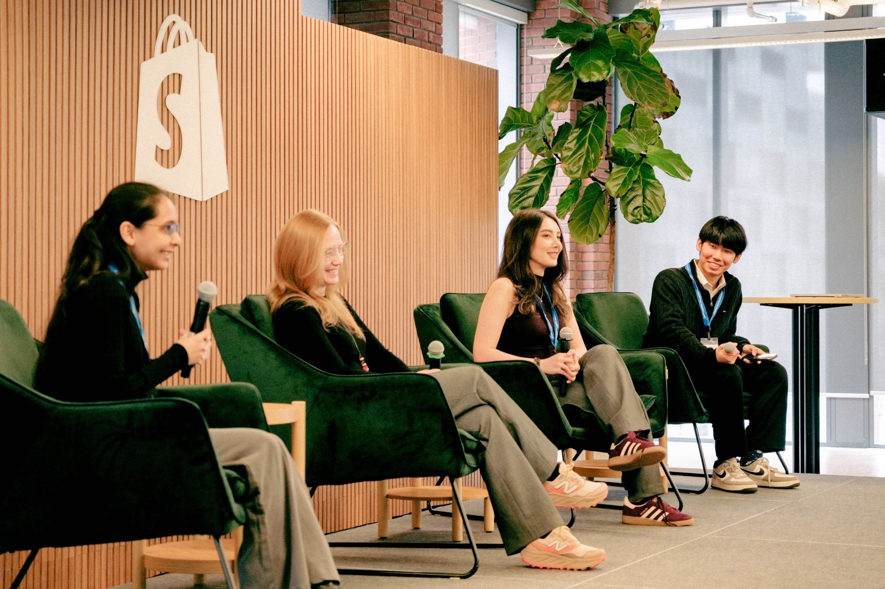
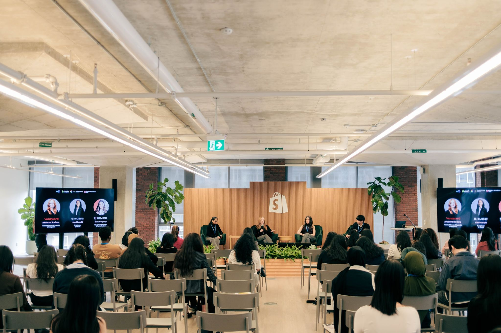
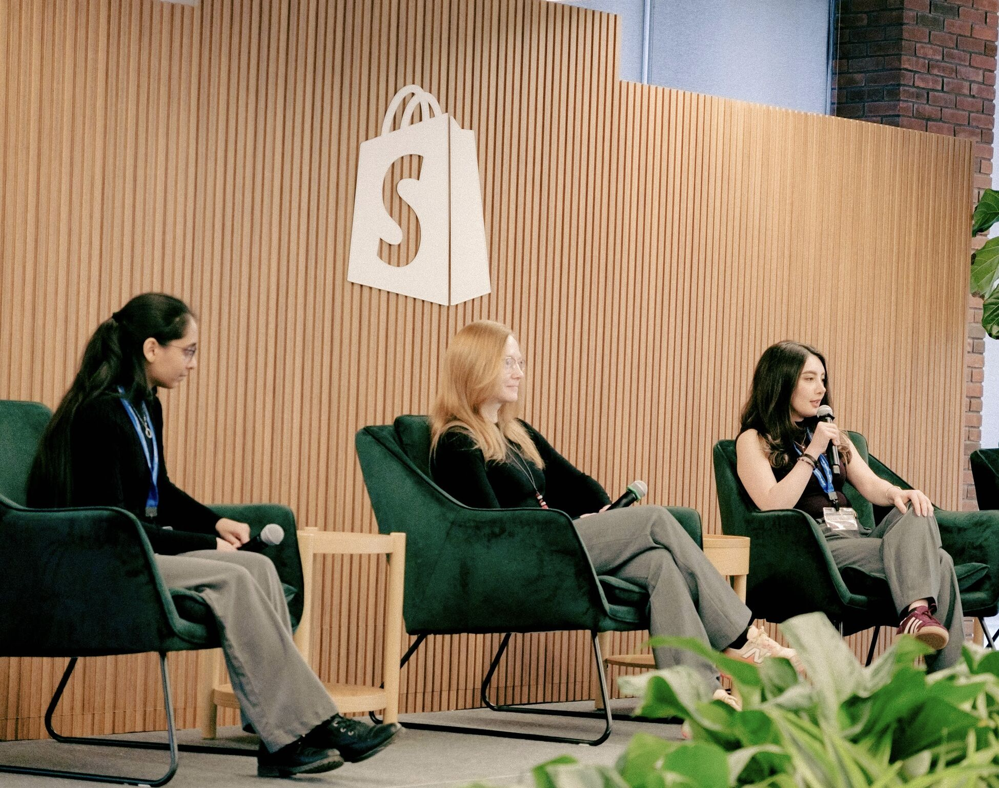

Build With AI: Women in Tech conference 2026
Women in Industry Research
Panel Speaker
A panel on personal journeys in AI research, the responsibilities of building and deploying AI systems, and bridging the academia–industry gap — alongside panelists Jekaterina Novikova and Aneri Gandhi, hosted by Google Developer Groups (UofT Mississauga) & ACM-W: ACM's Women in Computing at Shopify Toronto.



Shopify, Toronto, ON, Canada